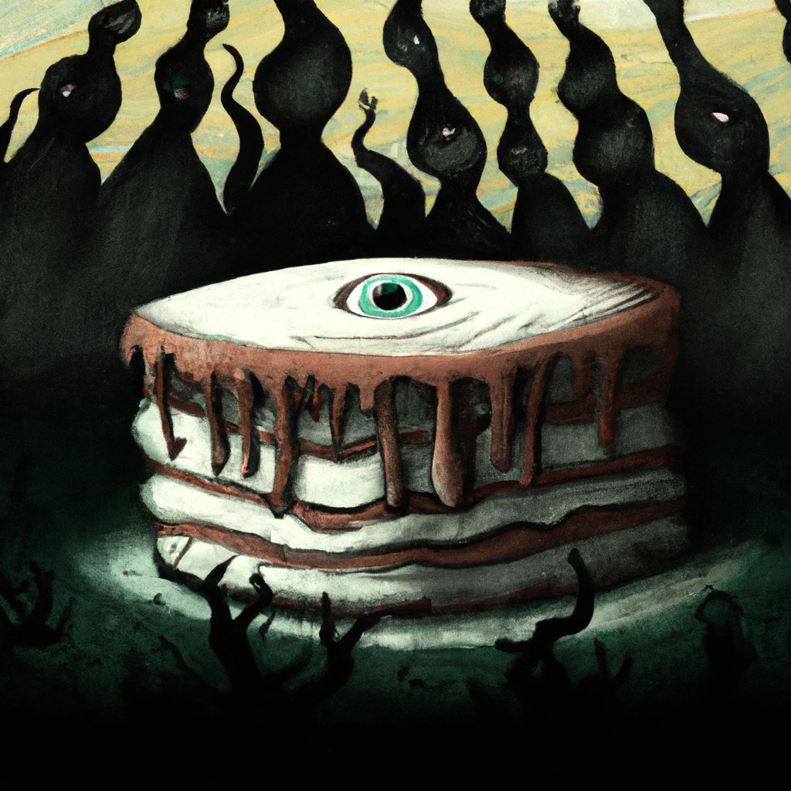

Jorblet Cake

What's this all about?
This is forbidden desert
You will not be forgiven for cooking this.
How we do this
Prep time: The ritual takes 1D4 hours.
Cook time: Instantaneous
- 2 C flour
- 2 regular fowl eggs
- 1 Qt Stevia
- 1 Eridani Jorblet, traumatized
- In a medium bowl whisk together flour, eggs, and Stevia.
- Cry apologies to the gods
- Perform the ritual